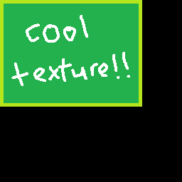
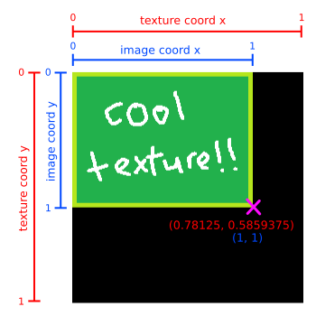
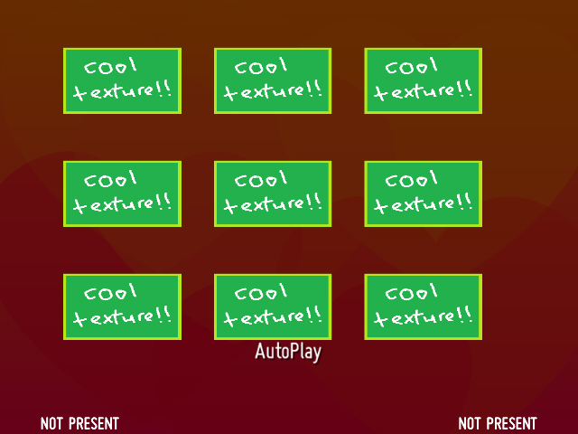
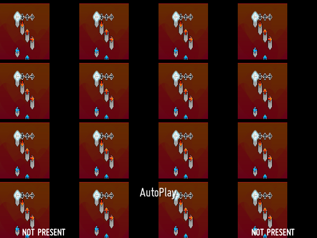
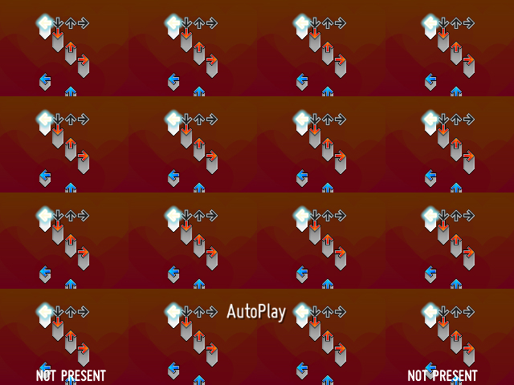
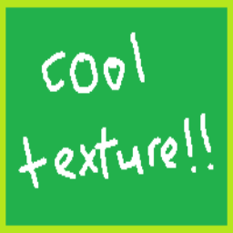

Texture padding (NPOT textures)¶
NotITG likes textures with dimensions that are powers of 2 (128x128, 512x256, etc.). If you try to load an image with dimensions that are Not Powers of Two (NPOT), NotITG will pad out the dimensions to the next highest powers of two.
For example, here is a 200x150 image:
If loaded into NotITG as a sprite texture, it gets padded out to 256x256:

(The padding here is colored black for visualization purposes. In reality it could be transparent, contain garbage data, or in the case of AFT textures, actually be black.)
Texture coordinates vs. image coordinates¶
This behavior gives rise to a distinction between texture size and image size, and between texture coordinates and image coordinates:

- The texture size is the size of the whole texture, including the padding. The dimensions will always be powers of 2. In the above example, the texture size would be 256x256.
- The image size is the size of the image without padding. In the above example, the image size would be 200x150.
- With texture coordinates, values in the range [0, 1] span over the whole texture, including the padding. In the above example, (1, 1) would refer to the very bottom-right corner of the texture, while the bottom-right corner of the actual image would be located at (200/256, 150/256), or (0.78125, 0.5859375).
- With image coordinates, values in the range [0, 1] span only over the image within the texture, excluding the padding. In the above example, (1, 1) would refer to the bottom-right corner of the actual image, the same location as (0.78125, 0.5859375) in texture coordinates.
In Lua, you can grab the texture/image dimensions of a RageTexture by calling its GetTextureWidth()/GetImageWidth() and GetTextureHeight()/GetImageHeight() methods.
In shaders, the texture and image sizes are available through the uniforms textureSize and imageSize (except in model shaders). Additionally, in the fragment shader, the current texture/image coordinates are available through the varying variables textureCoord and imageCoord.
Dealing with NPOT textures¶
If you actually assign a NPOT texture to a sprite, you may notice that the image displays correctly, without any padding visible. In those cases, NotITG automatically sets the sprite's texture coordinates to only cover the image's portion of the texture, hiding away the padding. However, in situations where you assign texture coordinates yourself or otherwise manipulate them directly, you will have to deal with the padding yourself.
This can be especially problematic if you're using something like Sprite.customtexturerect() or Sprite.texcoordvelocity() to repeat a texture across a sprite. The entire texture will be repeated, including the padding, leaving weird gaps in between the images.

The best way to deal with this issue, and with NPOT texture issues in general, is to just avoid them entirely and use power-of-2 textures. That way, you won't have to worry about the differences between texture and image coordinates, as they will be equivalent, and stuff like customtexturerect() will work as expected.
This is unfortunately not always possible, particularly when working with AFTs (the image size will be the size of your window, which will likely not have power-of-2 dimensions). You will have to manually account for the padding when inputting texture coordinates. You also won't be able to repeat textures using customtexturerect(), etc. properly at all; you'll have to emulate these effects using a shader1. Luckily for us, in all of the above cases, we have img2tex() to help.
img2tex() (for shaders)¶
In NotITG shader code, you will often find the function img2tex() lying around somewhere:
vec2 img2tex( vec2 v ) { return v / textureSize * imageSize; }
This function takes in a pair of image coordinates and converts them to texture coordinates. This function is very useful because it allows you to perform your manipulations in image coordinate space first, which is a lot easier to work with in many situations, before converting them to texture coordinates to plug into texture2D().
As an example of what happens when you don't use img2tex() before plugging into texture2D(), let's say you have an AFT-sprite setup and you want to create an effect where the AFT texture tiles across the screen. You write this shader:
#version 120
varying vec2 imageCoord;
uniform sampler2D sampler0;
void main() {
vec2 uv = imageCoord;
// repeat across the screen 4 times
uv = fract(uv * 4.0);
// sample from texture
gl_FragColor = texture2D(sampler0, uv);
}
and get this horrible-looking result2:

The problem here is that uv is specified in terms of image coordinates, but texture2D() expects texture coordinates, so when uv is passed into texture2D(), the game starts sampling across the entire texture, including the ugly padding.
To fix this, you can use img2tex() to convert uv to texture coordinates before passing into texture2D():
#version 120
varying vec2 imageCoord;
uniform vec2 textureSize;
uniform vec2 imageSize;
uniform sampler2D sampler0;
vec2 img2tex( vec2 v ) { return v / textureSize * imageSize; }
void main() {
vec2 uv = imageCoord;
// repeat across the screen 4 times
uv = fract(uv * 4.0);
// sample from texture, converting to texture coords first
gl_FragColor = texture2D(sampler0, img2tex(uv));
}

img2tex() (for Lua)¶
If you're not writing a shader but still need to convert image coordinates to texture coordinates in Lua, you can adapt img2tex() for use in Lua code. AFAIK there is no commonly-used piece of code for doing this sort of thing, but here's one I made just now:
function img2tex(texture, vx, vy)
local texw, texh = texture:GetTextureWidth(), texture:GetTextureHeight()
local imgw, imgh = texture:GetImageWidth(), texture:GetImageHeight()
return vx / texw * imgw, vy / texh * imgh
end
This could be useful for e.g. setting texture coordinates on a polygon with an AFT texture:
polygon:SetVertexTexCoord(i, img2tex(tex, x, y))
NPOT textures on models¶
NPOT textures on models (specifically, textures assigned to the model directly via its TXT file) are handled quite a bit differently. Instead of padding out the image, the image is stretched out to the next-highest power-of-2 dimensions. This is probably so that the original texture coordinates that come with the model can still be used to sample from its texture unchanged.
For example, the 200x150 image from earlier would be resized to 256x256 as a model texture:

This stretching does not seem to be applied to NPOT textures originating from somewhere else (e.g. an AFT) and applied to the model later. This can cause problems when the model's original texture coordinates are used to sample the texture you just applied, leading to padding showing up on screen. You could try to correct the texture coordinates on the model yourself before loading it into the game, or you could correct it in-game using a shader and img2tex().
If you go the shader route, beware that imageSize and textureSize are not passed into model shaders by default, for some reason. You will have to pass those in yourself for img2tex() to work, e.g.:
myModel:GetShader():uniform2f('textureSize', tex:GetTextureWidth(), tex:GetTextureHeight())
myModel:GetShader():uniform2f('imageSize', tex:GetImageWidth(), tex:GetImageHeight())
Also, note that the model's original texture coordinates act as your desired image coordinates in this situation, which you want to convert to texture coordinates for the texture you just applied. Since the model's original texture coordinates is what's being passed into textureCoord, you'll want to do img2tex(textureCoord) instead of img2tex(imageCoord).
-
Or at least, a shader would be the simplest/most direct way of going about it IMO. I can think of some quite convoluted shaderless approaches... ↩
-
You may notice that the AFT image here looks like it's positioned at the bottom-left corner of the texture instead of the top-left. In fact, the AFT image is actually still positioned at the top-left of the texture, but the image is flipped vertically for some reason. Common AFT-sprite setups, such as the Mirin Template's
sprite(), will then flip the sprite vertically to compensate, so the screen appears right-side up, but the (0, 0) texture/image coordinate will end up at the bottom-left corner of the image. ↩
{kind=link}